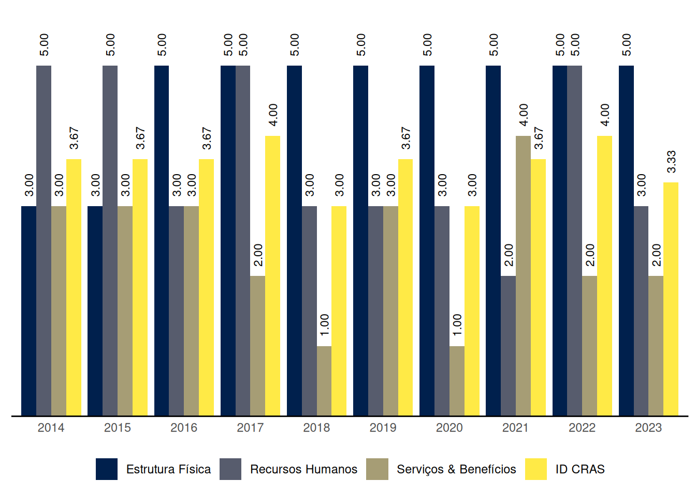
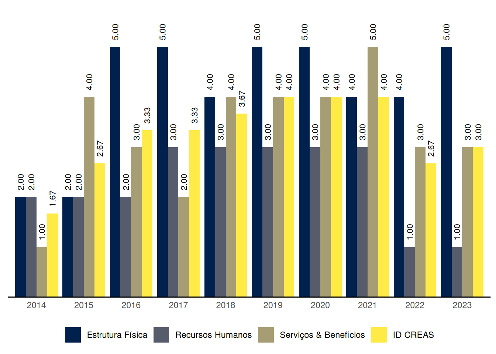

Planaltina
Relatório de Indicadores Censo SUAS 2023 do município de Planaltina, Goiás
1 ID CRAS: Índice de Desenvolvimento do CRAS
O ID CRAS é um indicador sintético que retrata o grau de desenvolvimento do CRAS. Ele é composto por três dimensões: Estrutura Física, Recursos Humanos e Serviços & Benefícios. Em cada dimensão é atribuída uma nota de 1 a 5 de acordo com critérios indicativos do nível de desenvolvimento do CRAS, sendo 5 o nível máximo de desenvolvimento. O ID CRAS é a média das notas alcançadas nas três dimensões.
O Gráfico 1 mostra a evolução das médias do ID CRAS ao longo dos anos no município de Planaltina, Goiás.
| Capacidade de até: | Quantidade |
|---|---|
| 2.500 famílias referenciadas | 0 |
| 3.500 famílias referenciadas | 0 |
| 5.000 famílias referenciadas | 1 |
As seções a seguir apresentam os resultados do município de Planaltina em cada uma das dimensões do ID CRAS, bem como os requisitos para se alcançar os níveis superiores.
1.1 ID CRAS: Dimensão Estrutura Física
1.1.1 CRAS com capacidade de referenciamento para até 2.500 ou 3.500 famílias
Planaltina não tem CRAS com capacidade de referenciamento para até 2.500 ou 3.500 famílias.
1.1.2 CRAS com capacidade de referenciamento para até 5.000 famílias
Na dimensão Estrutura Física, o nível de ID do CRAS com capacidade de referenciamento para até 5.000 famílias no município de Planaltina é 5.
O CRAS de nível 5, com capacidade de referenciamento para até 5.000 famílias, na dimensão Estrutura Física:
- Possui recepção; e
- Possui no mínimo 4 salas de atendimento, sendo pelo menos 1 com capacidade para 15 ou mais pessoas; e
- Possui no mínimo 1 sala administrativa; e
- Possui no mínimo 2 banheiros; e
- Possui acessibilidade; e
- Possui conjunto de equipamentos que inclua, no mínimo: 3 computadores conectados à internet, impressora, telefone e veículo exclusivo ou compartilhado.
1.2 ID CRAS: Dimensão Recursos Humanos
1.2.1 CRAS com capacidade de referenciamento para até 2.500 famílias
Planaltina não tem CRAS com capacidade de referenciamento para até 2.500 famílias.
1.2.2 CRAS com capacidade de referenciamento para até 3.500 famílias
Planaltina não tem CRAS com capacidade de referenciamento para até 3.500 famílias.
1.2.3 CRAS com capacidade de referenciamento para até 5.000 famílias
Na dimensão Recursos Humanos, o nível de ID do CRAS com capacidade de referenciamento para até 5.000 famílias no município de Planaltina é 3.
O CRAS de nível 3, com capacidade de referenciamento para até 5.000 famílias, na dimensão Recursos Humanos:
- Possui no mínimo 7 (9, se EV) profissionais, sendo pelo menos 4 (6, se EV) com nível superior; e
- Possui no mínimo 2 Assistentes Sociais (3, se EV).
Para alcançar o nível 4 na dimensão Recursos Humanos, o CRAS com capacidade de referenciamento para até 5.000 famílias precisa, além dos resquisitos do nível 3:
- Possuir no mínimo 7 (10, se EV) profissionais, sendo pelo menos 5 (7, se EV) com nível superior; e
- Possuir no mínimo 1 Psicólogo; e
- Possuir coordenador com nível superior.
1.3 ID CRAS: Dimensão Serviços & Benefícios
Na dimensão Serviços & Benefícios, o nível de ID do CRAS no município de Planaltina é 2.
O CRAS de nível 2 na dimensão Serviços & Benefícios em município de porte Grande:
- Executa o PAIF, realizando no mínimo as seguintes atividades: acompanhamento de famílias, grupo/oficina com famílias e visitas domiciliares; e
- Possui forte articulação com pelo menos um dos seguintes Serviços: Serviços de Educação, Serviços de Saúde e CREAS.
Para alcançar o nível 3 na dimensão Serviços & Benefícios, o CRAS em município de porte Grande precisa, além dos requisitos do nível 2:
- Executar o PAIF realizando orientação/acompanhamento para inserção no BPC, além das atividades exigidas para o nível 2; e
- Possuir oferta de Serviço de Convivência pelo menos para um ciclo de vida (oferta direta do CRAS ou por meio de unidades a ele referenciadas); e
- Possuir forte articulação com o(s) CREAS e com os Serviços de Educação e Saúde no território.
2 ID CREAS: Índice de Desenvolvimento do CREAS
O ID CREAS é um indicador sintético que retrata o grau de desenvolvimento do CREAS. Ele é composto por três dimensões: Estrutura Física, Recursos Humanos e Serviços & Benefícios. Em cada dimensão é atribuída uma nota de 1 a 5 de acordo com critérios indicativos do nível de desenvolvimento do CREAS, sendo 5 o nível máximo de desenvolvimento. O ID CREAS é a média das notas alcançadas nas três dimensões.
O Gráfico 2 mostra a evolução das médias do ID CREAS ao longo dos anos no município de Planaltina, Goiás.

As seções a seguir apresentam os resultados do município de Planaltina em cada uma das dimensões do ID CREAS, bem como os requisitos para se alcançar os níveis superiores.
2.1 ID CREAS: Dimensão Estrutura Física
Na dimensão Estrutura Física, o nível de ID do CREAS no município de Planaltina é 5.
O CREAS de nível 5 na dimensão Estrutura Física em município de porte Grande:
- Possui recepção; e
- Possui no mínimo 2 banheiros; e
- Possui 1 ou mais sala Administrativa; e
- Possui kit equipamento: Telefone, Impressora, 2 ou mais computadores com Internet e Veículo próprio ou compartilhado; e
- Possui acessibilidade (com ou sem ABNT); e
- Possui 5 salas ou mais para atendimento, sendo pelo menos 1 com capacidade para 15 ou mais pessoas.
2.2 ID CREAS: Dimensão Recursos Humanos
Na dimensão Recursos Humanos, o nível de ID do CREAS no município de Planaltina é 1.
O CREAS de nível 1 na dimensão Recursos Humanos em município de porte Grande se caracteriza por:
- Inexistência de Assistente Social ou de Psicólogo; ou
- Possuir menos de 6 trabalhadores; ou
- Possuir menos de 4 profissionais das áreas de serviço social e psicologia.
Para alcançar o nível 2 na dimensão Recursos Humanos, o CREAS em município de porte Grande precisa:
- Ter quantidade total de trabalhadores (nível superior e médio) maior ou igual a 6; e
- Ter quantidade total de Assistentes Sociais mais Psicólogos maior ou igual a 4, sendo obrigatória a presença de profissionais destas duas áreas.
2.3 ID CREAS: Dimensão Serviços & Benefícios
Na dimensão Serviços & Benefícios, o nível de ID do CREAS no município de Planaltina é 3.
O CREAS de nível 3 na dimensão Serviços & Benefícios em município de porte Grande:
- Oferta o PAEFI assegurando a realização, pelo menos, das seguintes atividades: Entrevistas de acolhida para avaliação inicial dos casos, Atendimento psicossocial individual/familiar, Construção de Plano Individual e/ou Familiar de atendimento, Visitas domiciliares e Elaboração de relatórios técnicos sobre casos em acompanhamento; e
- Possui forte articulação com o CRAS e com o Conselho Tutelar; e
- Oferta atendimento para variadas situações de violência ou violação de direitos e para os diferentes ciclos de vida; e
- Oferta o Serviço de MSE.
Para alcançar o nível 4 na dimensão Serviços & Benefícios, o CREAS em município de porte Grande precisa, além dos requisitos do nível 3:
- Ofertar o PAEFI assegurando a realização da atividade de Atendimento psicossocial em grupo (além da realização das atividades exigidas no nível 3); e
- Ter quantidade média de casos em acompanhamento no mês, dividida pela equipe técnica (AS + PSI) menor ou igual a 50 casos; e
- Ofertar o Serviço de MSE assegurando a elaboração do Plano Individual de Atendimento (PIA) do adolescente; e
- Ofertar o Serviço de Abordagem ou ter o Serviço referenciado.